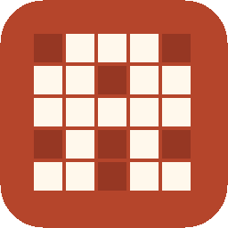
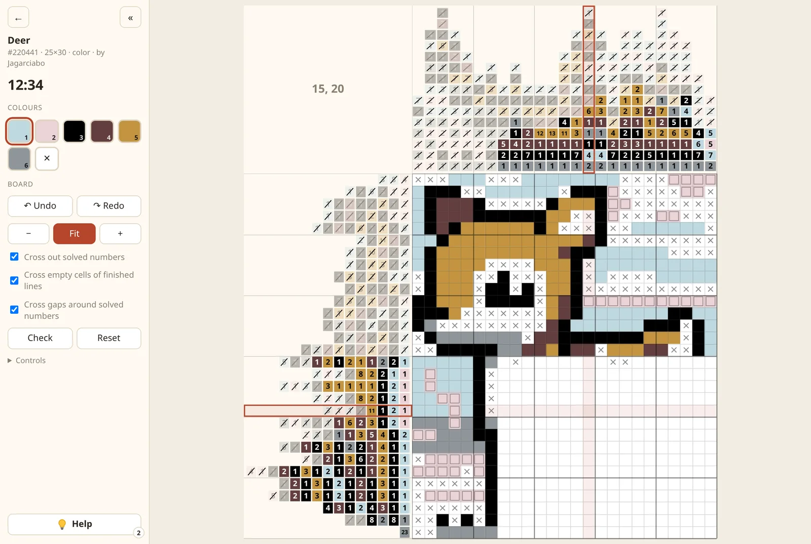
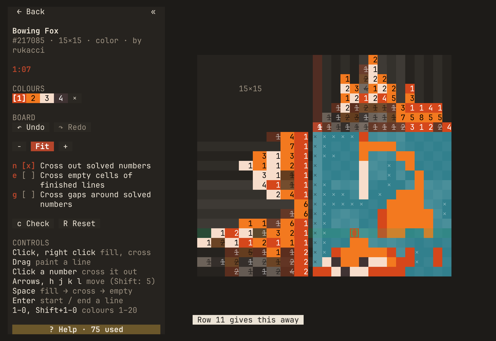
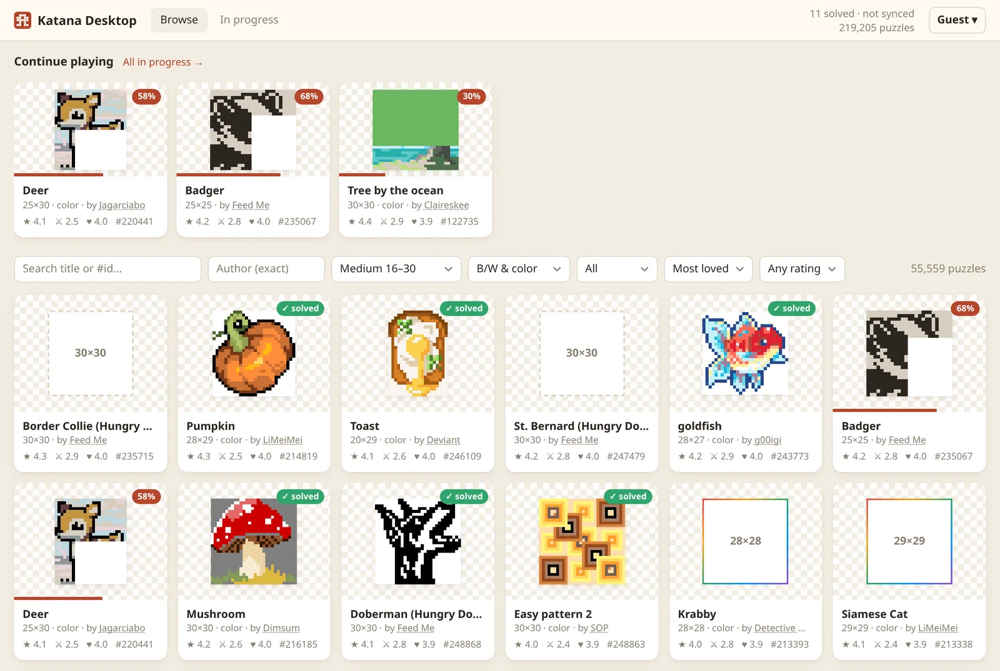
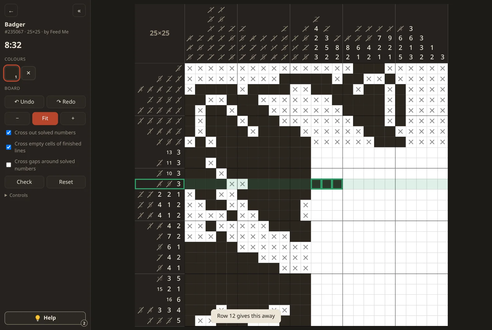
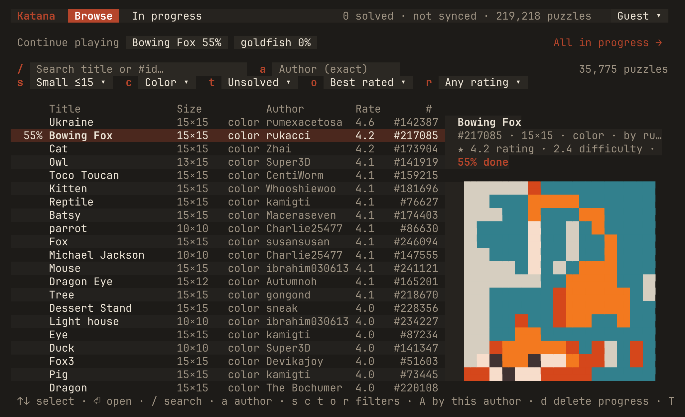
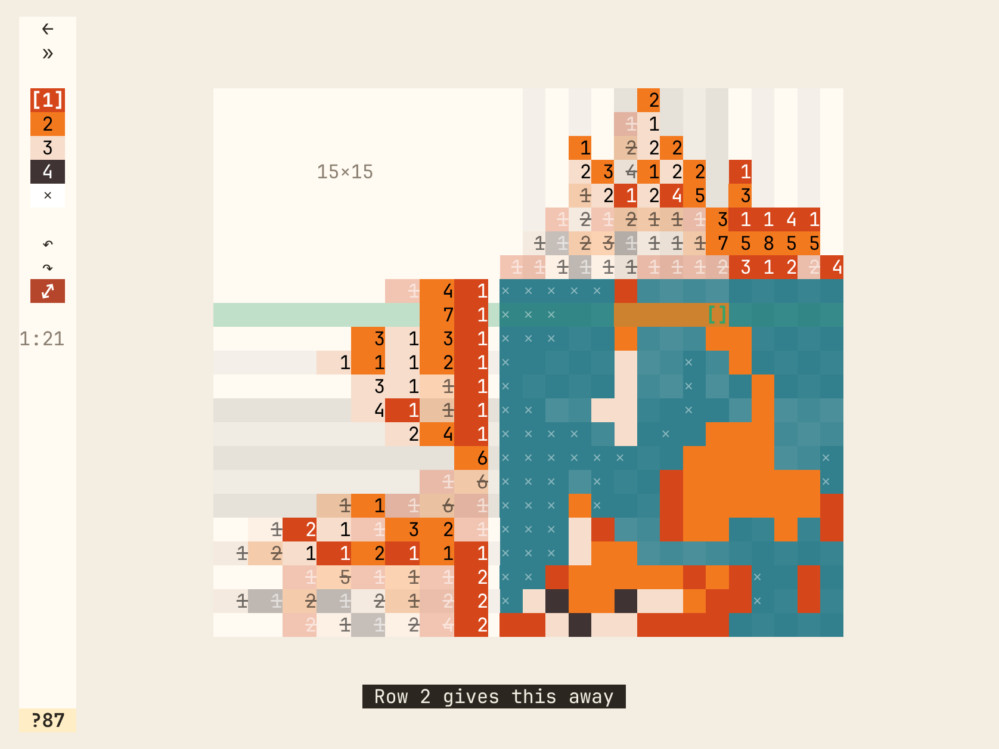

Over 200,000 puzzles
The whole user-created catalogue, black and white and colour. Search by title or author, filter by size, colour and rating, and pick up the boards you left in progress.

Katana Install GitHubAn unofficial native client for the user-created puzzles of Nonograms Katana, synced with your Katana account. One 4 MB program for Windows, macOS and Linux.
Katana Desktop in a terminal: the puzzle list, your Nonograms Katana account and the board, by keyboard or mouse. One binary with no dependencies.


The whole user-created catalogue, black and white and colour. Search by title or author, filter by size, colour and rating, and pick up the boards you left in progress.
Log in and your solved puzzles, score and play time sync both ways with the official apps. An account is optional: as a guest, everything is kept on this device.
Cross out solved numbers, the rest of a finished line, and the gaps around solved blocks. Help fixes a mistake or shows what a single row or column gives away.
Drag to paint a straight line, wheel to scroll and zoom. Or stay on the keyboard: arrows or h j k l, Space to mark, digits for colours, undo and redo.
Arrows or h j k l, Space to mark, Enter to draw a line, digits for colours. Click, drag and the wheel work too.
A single Rust binary that draws its UI in the system webview. No Electron and no local server. Light and dark themes.
Built with ratatui: no webview, no GTK. It wants 24-bit colour and falls back to 256. Big puzzles scroll under their clues instead of shrinking.
katana-tui is the same app without a window. It shares the login and every board with the desktop app.
Same data directory as Katana Desktop: the login, the puzzle list and every board. Start in one, continue in the other.




Download the installer Portable .exe
The installer is for your user only and needs no admin rights. The portable file runs without installing anything. Neither is code-signed, so SmartScreen may ask for confirmation on first run.
It holds katana-tui.exe. Run it from Windows Terminal.
Universal, for Apple silicon and Intel. The app isn't notarized, so macOS refuses to open it the first time: allow it in System Settings → Privacy & Security → “Open Anyway”, or run
xattr -dr com.apple.quarantine "/Applications/Katana Desktop.app"With Homebrew (built from source):
brew install arkadyburyakov/tap/katana-tuiOr download the universal binary. It isn't notarized, so after unpacking:
xattr -d com.apple.quarantine katana-tuiFrom the AUR, prebuilt:
yay -S katana-desktop-binOr built from source:
yay -S katana-desktopFrom the AUR, prebuilt:
yay -S katana-tui-binOr built from source:
yay -S katana-tuiThen, in the folder you saved it to:
sudo apt install ./katana-desktop_*.debThen, in the folder you saved it to:
sudo dnf install ./katana-desktop-*.rpmThe archive holds a usr/ tree with the binary, the app-menu entry and the icon.
It needs webkit2gtk-4.1 and glibc 2.35 or newer.
The archive holds a usr/ tree with the katana-tui binary; it needs
glibc 2.35 or newer. With Homebrew on Linux, it builds from source:
brew install arkadyburyakov/tap/katana-tuiEvery file and its checksum is on the releases page. To build from source, see the README.